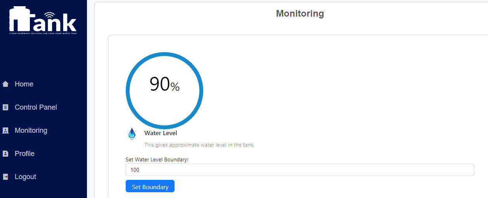
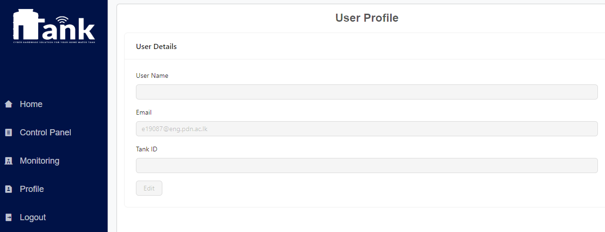
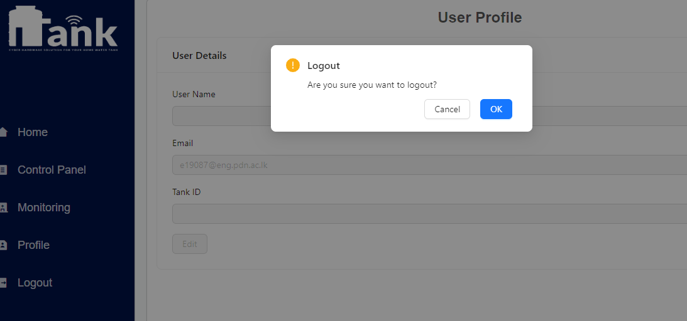
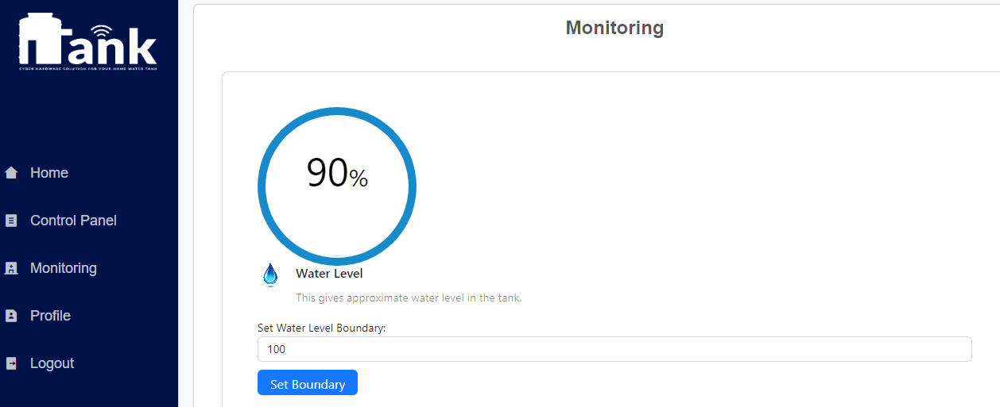
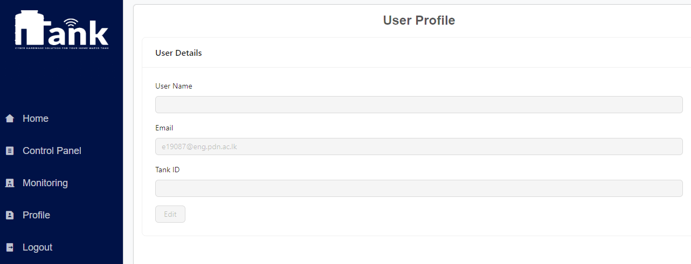
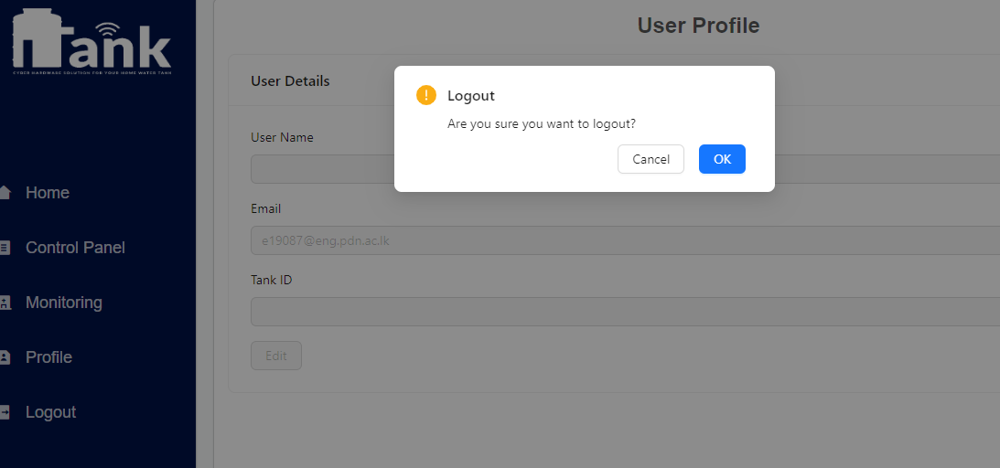

JSON Web Tokens (JWT)
For authentication purposes, our API uses the JSON Web Token to ensure integrity.
In the successful event of login, the user must receive a JWT, which is signed by the
server.
Whenever the client wants to communicate with API (after the login stage), it has to
pass that returned token with the
request.
If somehow the token is modified, API would deny access to the data.
Input Validations
User Inputs are the most common way to commit a malicious attack.
To prevent such scenarios, we validate the user input from both the front-end
application and the back-end API.
If inputs are not in the correct order, in the front-end, it denies the inputs. And from
the back-end, it denies the request.
Encrypt Sensitive Data
Although we are using a relational database to work with data, we do not directly store
sensitive data on the database.
For that, we encrypt the sensitive data on the API with the help of well-known powerful
libraries and then store those in the database.
SSL/TLS Communication
To ensure secure communication between the mobile application, and the API, we used the
HTTPS protocol to securely transmit the data.
With that, we can guarantee the message's integrity as well as the confidentiality of
the data.
In our API itself is secured with AWS EC2 security features. Hence the security of the
system is more in an advanced manner.
MQTT Broker Authentication
Hardware to hardware communication (API and the Microcontroller), we have used the MQTT
as the messaging protocol.
For that, we have currently used AWS IoT Core as an MQTT message broker, which is a
secured private message broker that requires certificate-based authentication for the
MQTT clients.


 




